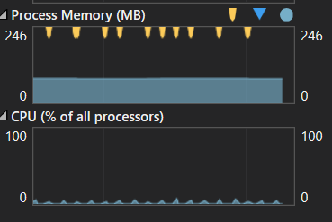
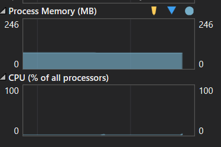

One of the powerful capabilities we’ve learned to leverage when using the MVVM pattern for XAML based apps, whether for the desktop or mobile platforms, is data binding. Binding allows us to easily keep our View up to date with changes in the ViewModel. These bindings are typically pretty quick when not abused, but there are situations where they can become less than performant, causing visual anomalies such as flickering or even impacting general app performance.
This post is part of The Second Annual C# Advent organized by Matthew Groves. Check out the article for a bunch of other great posts about C# development.
The Problem
One of these situations that can really affect performance is binding a frequently changing observable collection to your UI, especially with a complex DataTemplate. We can run into this problem when we are doing something like polling an API that returns a collection that updates frequently. This can be even worse if an item can be added or removed from the list over time.
A simple solution to this problem might be to just rebuild the list each time. While that might seem to work well enough with just a few items or a basic UI layout it will result in the creation and disposal of a lot of objects. That constant churn of object construction and destruction will ramp up both the CPU and memory usage of your application.
var updatedBloggers = BloggerService.GetSantasBloggers();
SantasBloggers = new ObservableCollection<BloggerViewModel>(
updatedBloggers.Select(u => new BloggerViewModel(u.Id)
{
Name = u.Name,
Blog = u.Blog,
NaughtyNiceRating = u.NaughtyNiceRating
}));
A Solution
I solved this by writing code to compare my incoming list with my displayed list and to update the existing list to match. We want to achieve three steps with this code: 1) remove items that are no longer present, 2) update items that are in both lists, and 3) add new items from our incoming list. There is an optional 4th step that my code doesn’t cover, ordering the list of current items to match the order from our incoming list.
Removing Old Items
First we get all the items from our existing list that we cannot find in our update list as a new list (so we don’t get an exception due to the collection changing as we enumerate it). Then we remove each item that didn’t match from the existing list.
var itemsToRemove = existingCollection
.Where(e => !updateCollection.Any(u => e.Id == u.Id))
.ToList();
foreach (var item in itemsToRemove)
{
existingCollection.Remove(item);
}
Updating Existing Items
After we have removed the old items from the list we need to update the remaining items with the new values.
foreach (var item in existingCollection)
{
var updatedItem = updateCollection.First(u => item.Id == u.Id));
item.Property = updatedItem.Property
}
Adding new Items
Finally, we need to add in any new items from our update list.
var itemsToAdd = updateCollection
.Where(u => !existingCollection.Any(e => e.Id == u.Id)).ToList();
foreach (var item in itemsToAdd)
{
existingCollection.Add(item);
}
Making it Better with Extension Methods
You might have noticed that we are doing some repetitive iterations when we remove and update the collection, and this code is very specific to our app. Let’s make the code a little more generic and put it in some extension methods so we can reuse it. We’ll start by creating the extension class and main entry point:
public static class IListExtensions
{
public static void UpdateItems<T1, T2>(
this IList<T1> targetCollection,
IList<T2> updateCollection,
Func<T1, T2, bool> comparer,
Func<T2, T1> mapper,
Action<T1, T2> updater)
{
if (updateCollection == null) return;
var itemsToRemove = new List<T1>();
UpdateExistingItemsAndIdentifyRemovedItems(targetCollection, updateCollection,
comparer, updater, itemsToRemove);
RemoveOldItemsFromTarget(targetCollection, itemsToRemove);
AddNewItemsToTarget(targetCollection, updateCollection, comparer, mapper);
}
}
The UpdateItems method has been made generic and setup to accept 2 types, one for the target (UI list), and one for the incoming updates. This allows you to handle converting models/DTOs into a viewmodel or other suitable type for you UI. It also accepts a comparer delegate that returns a bool if the source and target item match (and allows you to do that check however you need), a mapper delegate that accepts an update item and returns an object valid for the target list (for doing inserts of new records), and an updater delegate that takes in the matched target and update items and allows you to apply the changes to your target item. The method then creates a list to hold references to items that need to be removed from the target list and then calls 3 other methods.
Update Existing Items And Identify Removed Items
Here we loop through the target collection and find the matching item in the update collection. If we don’t find the item in the update collection we add it to our removal list for later processing. If the item is found we pass the original and updated items into our updater delegate for processing.
private static void UpdateExistingItemsAndIdentifyRemovedItems<T1, T2>(
IList<T1> targetCollection,
IList<T2> updateCollection,
Func<T1, T2, bool> comparer,
Action<T1, T2> updater,
List<T1> itemsToRemove)
{
foreach (var targetItem in targetCollection)
{
var updateItem = updateCollection.FirstOrDefault(u => comparer(targetItem, u));
if (updateItem == null)
{
itemsToRemove.Add(targetItem);
continue;
}
updater?.Invoke(targetItem, updateItem);
}
}
Remove Old Items From Target
After we finish updating the existing items we pass the aggregated list of items to remove into the aptly named RemoveOldItemsFromTarget method. As you might guess, this method is pretty simple and does exactly what it says.
private static void RemoveOldItemsFromTarget<T1>(
ICollection<T1> targetCollection,
IEnumerable<T1> itemsToRemove)
{
foreach (var item in itemsToRemove)
{
targetCollection.Remove(item);
}
}
Add New Items To Target
The final step to this process is to add any new items in the update list to the target list. To do this we flip the looping and enumerate the update collection while checking if the item is in the target list. If it is not found we use the mapper delegate to convert the type (if needed), and then we iterate through the list of items to add and insert them into the target collection.
private static void AddNewItemsToTarget<T1, T2>(
IList<T1> targetCollection,
IList<T2> updateCollection,
Func<T1, T2, bool> comparer,
Func<T2, T1> mapper)
{
var itemsToAdd = updateCollection.Where(updateItem
=> !targetCollection.Any(existingITem => comparer(existingITem, updateItem)))
.ToList();
foreach (var item in itemsToAdd)
{
targetCollection.Add(mapper(item));
}
}
Implementing
Now that we have the extension methods in place it is pretty easy to use. All we have to do is get our updated data from the API and call the method.
var modelToViewModelMatcher = new Func<BloggerViewModel, Blogger, bool>(
(vm, model) => vm.Id == model.Id);
var mapBloggerToBloggerViewModel = new Func<Blogger, BloggerViewModel>(m =>
new BloggerViewModel(m.Id)
{
Name = m.Name,
Blog = m.Blog,
NaughtyNiceRating = m.NaughtyNiceRating
});
var viewModelUpdater = new Action<BloggerViewModel, Blogger>((vm, model) =>
{
vm.NaughtyNiceRating = model.NaughtyNiceRating;
vm.JustAdded = false;
});
var updatedBloggers = BloggerService.GetSantasBloggers();
SantasBloggers.UpdateItems(
updatedBloggers, modelToViewModelMatcher,
mapBloggerToBloggerViewModel, viewModelUpdater);
Performance
My Santa’s Bloggers sample project has a simple implementation of this extension that allows us to do some simple performance checks. When it first launches it is using simple code that just rebuilds the UI list each time. Run it and let the performance monitor settle down, you will see a regular spike on the CPU and hit to the garbage collector. Now check the box to enable the extension method and the garbage collection and CPU spike stop almost immediately. This is on a simple app with a very basic Item Template, imagine a template showing more data, or graphics, doing the same thing.
 I hope you’ve found this post useful, I’d love to hear your feedback. You can check out my Santa’s Bloggers sample project on my GitHub account.
comments powered by Disqus